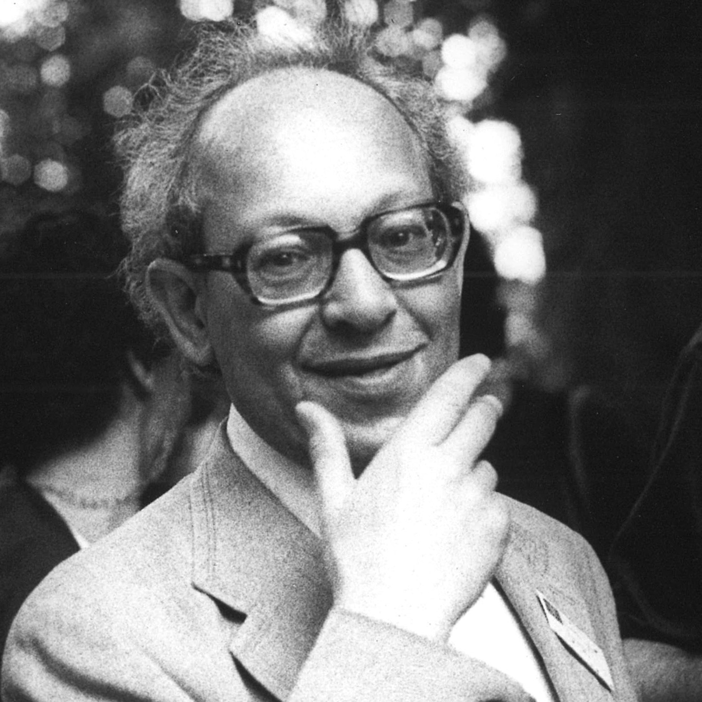

Founder & director
Jacques Ledoux

Portrait, to be added
All five editions
Royal Belgian Film Archive
Curator and, from 1948, director of the Royal Belgian Film Archive. Ledoux conceived EXPRMNTL and ran it across all five editions, from the first selection in 1949 to the final edition in 1974.
He described Knokke's true value as bringing filmmakers face to face with novelists, theatre people and painters — screenings were only part of what the festival offered; discussions and chance meetings were, in his view, just as important.
Related
Editions organized by Ledoux
Resources
Photographs, correspondence & press
DOC.01
Portrait photographspending digitization
To be added
DOC.02
Correspondencepending digitization
To be added
DOC.03
Press clippingspending digitization
To be added